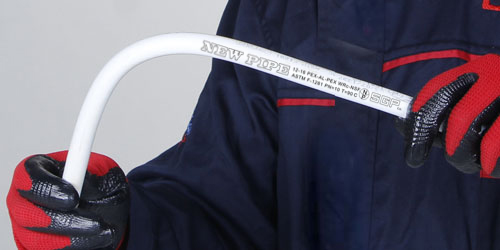

لوله و اتصالات پنج لایه یکی از استانداردترین سیستمهای لولهکشی در تأسیسات مکانیکی ساختمان است که به دلیل ترکیب همزمان پلیمر و فلز، عملکردی پایدار در شرایط دمایی و فشاری مختلف ارائه میدهد.
در میان برندهای موجود در بازار ایران، لوله و اتصالات پنج لایه نیوپایپ (NewPipe) بهعنوان یکی از سیستمهای پرکاربرد در پروژههای مسکونی، تجاری و صنعتی شناخته میشود. انتخاب صحیح این سیستم نیازمند شناخت دقیق ساختار، مشخصات فنی و نکات اجرایی است.
ساختار فنی لوله پنج لایه
لوله پنج لایه از پنج لایه پیوسته تشکیل شده است:
- پلیمر داخلی (در تماس مستقیم با سیال)
- لایه چسب
- لایه آلومینیوم (هسته مقاومتی)
- لایه چسب
- پلیمر خارجی (محافظ مکانیکی)
نقش لایه آلومینیوم
لایه آلومینیوم میانی سه ویژگی کلیدی را در سیستم ایجاد میکند:
- کاهش ضریب انبساط طولی لوله در برابر تغییرات دما
- جلوگیری از نفوذ اکسیژن به داخل سیستم لولهکشی
- افزایش استحکام حلقوی و مقاومت لوله در برابر فشار داخلی
ویژگیهای مهندسی سیستم نیوپایپ
سیستم نیوپایپ بر پایه ترکیب استاندارد مواد پلیمری و آلومینیوم طراحی شده و ویژگیهای زیر را ارائه میدهد:
- تحمل فشار کاری مورد نیاز سیستمهای آبرسانی ساختمانی
- عملکرد پایدار در دماهای متغیر (آب سرد و گرم)
- کاهش افت فشار به دلیل سطح داخلی صاف و یکنواخت
- مقاومت در برابر خوردگی، رسوب و واکنشهای شیمیایی
- سازگاری کامل با اتصالات پرسی استاندارد
- عمر مفید طولانی در صورت اجرای صحیح
برای مشاهده قیمت بهروز انواع سایز لوله و اتصالات پنج لایه نیوپایپ
مشاهده لیست قیمت نیوپایپکاربردهای سیستم لوله پنج لایه
این سیستم در پروژههای مختلف تأسیساتی مورد استفاده قرار میگیرد:
- شبکه آب سرد و گرم مصرفی ساختمان
- سیستم گرمایش از کف
- رایزرهای اصلی و فرعی تأسیسات
- مدارهای رفت و برگشت موتورخانه
- تأسیسات ساختمانهای مسکونی، اداری و تجاری
انواع اتصالات در سیستم نیوپایپ
اتصالات مورد استفاده در این سیستم شامل موارد زیر است:
- زانو ۹۰ درجه و ۴۵ درجه
- سهراهی مساوی و تبدیلی
- رابط مستقیم
- تبدیل سایز
- مهره ماسوره (برای اتصالهای قابل باز و بسته شدن)
- بوشن و اتصالات تکمیلی
نکات کلیدی در انتخاب و خرید لوله و اتصالات پنج لایه
۱. انتخاب سایز بر اساس محاسبات مهندسی
انتخاب سایز باید بر اساس پارامترهای زیر انجام شود:
- دبی جریان
- افت فشار مجاز
- طول مسیر لولهکشی
- نوع مصرف (آب سرد، گرم یا گرمایش)
۲. کیفیت مواد اولیه
کیفیت پلیمر و آلومینیوم استفادهشده در ساختار لوله، تأثیر مستقیم بر عمر مفید، مقاومت حرارتی و پایداری مکانیکی سیستم دارد.
۳. کیفیت اتصالات و سیستم پرس
اتصالات پرسی در این سیستم نقش بحرانی دارند. استفاده از اتصالات غیراستاندارد میتواند منجر به نشتی در بلندمدت، افت فشار سیستم و کاهش عمر مفید تأسیسات شود.
۴. شرایط نصب و اجرای صحیح
حتی بهترین متریال نیز در صورت اجرای غیراصولی، عملکرد مطلوب نخواهد داشت. رعایت موارد زیر ضروری است:
- استفاده از ابزار پرس استاندارد
- رعایت عمق و زاویه برش
- جلوگیری از تنش مکانیکی در لوله
سایزهای رایج در پروژههای ساختمانی
| سایز | کاربرد رایج |
|---|---|
| ۱۶ میلیمتر | انشعابات داخلی |
| ۲۰ میلیمتر | مصرف عمومی |
| ۲۵ میلیمتر | رایزرهای سبک |
| ۳۲ میلیمتر | خطوط اصلی سبک |
| ۴۰ میلیمتر به بالا | سیستمهای سنگین |
اشتباهات رایج در انتخاب و اجرا
- انتخاب سایز صرفاً بر اساس قیمت
- استفاده از اتصالات غیراستاندارد یا متفرقه
- عدم توجه به نقشه تأسیسات
- اجرای سیستم بدون ابزار پرس استاندارد
- عدم رعایت مسیر مناسب لولهکشی
مقایسه کلی سیستم پنج لایه با لولههای پلیمری ساده
از دید مهندسی، سیستم پنج لایه نسبت به لولههای پلیمری ساده مزایای زیر را دارد:
- انبساط حرارتی کمتر
- استحکام مکانیکی بالاتر
- افت فشار کمتر در مسیر
- طول عمر بیشتر در شرایط کاری استاندارد
سوالات متداول
لوله پنج لایه نیوپایپ در چه سیستمهایی استفاده میشود؟
در سیستمهای آب سرد و گرم مصرفی ساختمان، گرمایش از کف و شبکههای تأسیساتی مسکونی، اداری و تجاری.
آیا این سیستم نیاز به نگهداری خاصی دارد؟
در صورت اجرای صحیح با اتصالات استاندارد، این سیستم نیاز به نگهداری دورهای خاصی ندارد.
تفاوت اصلی آن با لولههای پلیمری چیست؟
وجود لایه آلومینیوم میانی باعث کاهش انبساط طولی و افزایش مقاومت مکانیکی نسبت به لولههای پلیمری ساده میشود.
آیا کیفیت اتصالات در عملکرد سیستم مهم است؟
بله، اتصالات بخش بحرانی سیستم هستند و کیفیت آنها مستقیماً بر نشتی، افت فشار و عملکرد کل شبکه تأثیر دارد. برای انتخاب اتصالات اصل نیوپایپ میتوانید با کارشناسان ساویسمان مشورت کنید.
جمعبندی
سیستم لوله و اتصالات پنج لایه نیوپایپ یک راهکار استاندارد در تأسیسات ساختمانی محسوب میشود که در صورت انتخاب صحیح سایز، استفاده از اتصالات استاندارد و اجرای اصولی، عملکردی پایدار و بلندمدت ارائه میدهد.